Frictionless invoicing
Invoicing is a critical touchpoint between builders and their clients. It drives cash flow, but it also shapes trust, communication, and how deeply a builder's data connects with the rest of Buildertrend. This case study covers the full 12-month arc, broken into three parts: setting up invoices, closing the accounting gap, and improving invoice presentation.
What shipped
- Part 1 · Setting up invoices. Draw schedules and payment-schedule linkage — 762 builders adopted in the first months.
- Part 2 · Closing the accounting gap. Invoice date, schedule release, and Due-date calculation — launched as a single GTM release.
- Part 3 · Improving invoice presentation. Progress invoices — MVP went GA in December 2025, five iterations since.
Product overview
Buildertrend is a construction management platform for residential and commercial builders to manage projects from pre-sale through warranty. It combines scheduling, budgeting, client communication, document storage, invoicing, and more in one place so office staff, field crews, and clients stay aligned.
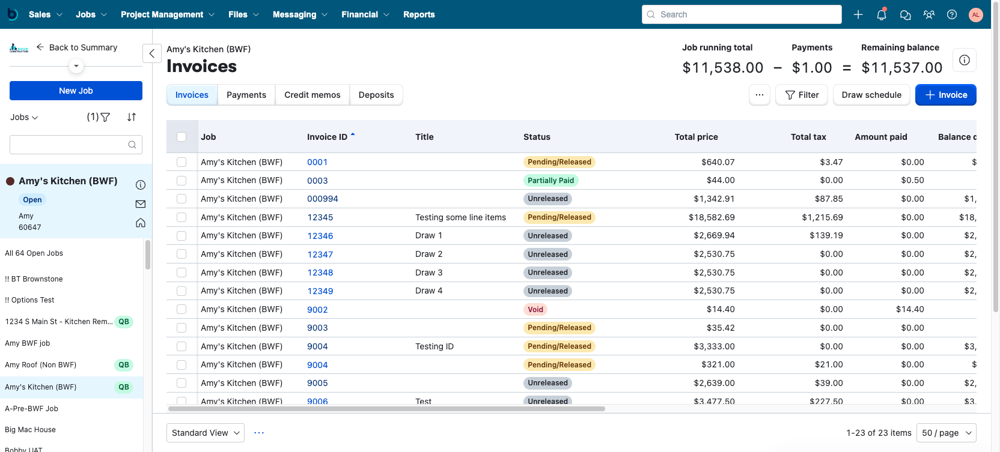
Meet the users
Bella
Builder / GC
Owns the job's financials and runs point on progress, subs, and receivables with the bookkeeper.
Frank
Field crew
Completes on-site work. His task updates indirectly drive invoice timing.
Oscar
Office Manager / Bookkeeper
Creates invoices, sends them to clients, and oversees the payment process.
Chelsea
Client / Homeowner
Paying for the job and expecting transparency on scope, price, and terms.
End-to-end journey of a construction job
To ground the solution in real workflows, we mapped the end-to-end user journey for both fixed-price and open-book builders, from job sales through job finish. The goal: track the major activities, handoffs, and decisions that influence invoicing across every phase.
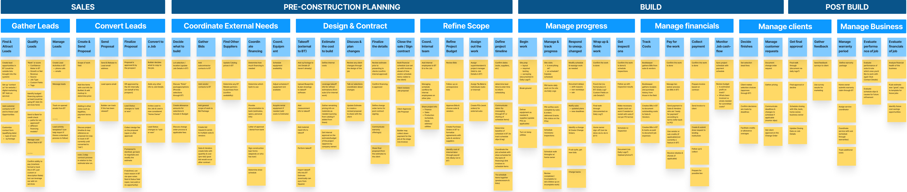
- Sales & Pre-Construction: proposal and contract creation, where scope, payment schedules, and terms are defined.
- Job setup: how builders structure jobs (templates vs. building from scratch), including schedules, phases, and milestone planning.
- Construction: tracking progress through schedule items and To Do's, and how that progress informs when invoices should be created or released.
- Invoice creation & review: how builders collect, verify, and input billable items (especially for open-book), and how internal collaboration affects timing.
- Job closeout: final invoicing, lien waivers, payment reconciliation, and documentation for client or lender needs.
Invoicing journey by contract type
Fixed price (milestone invoicing)
In a fixed-price contract, the client agrees to pay a set amount for the full scope of work, regardless of actual costs. Builders typically break the total into milestone payments tied to specific phases (foundation, framing, finishes). Invoicing is pre-planned and happens when a milestone is reached, coordinated with schedules, change orders, and approvals.
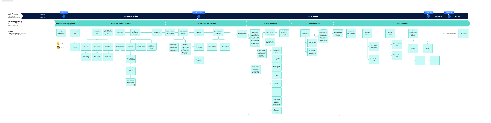
Open book (interval / time-based invoicing)
In an open-book contract, the client pays for actual job costs (labor, materials) plus a builder's fee or markup. Builders invoice on a recurring basis (biweekly or monthly) for billable costs incurred during that period. This requires builders to collect, verify, and classify every cost item before billing, often reconciling bills and labor entries manually.
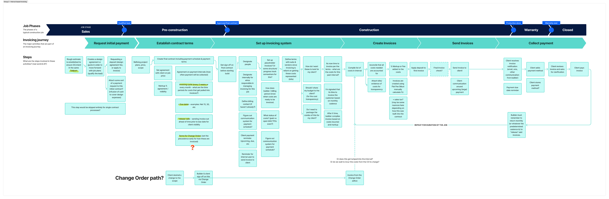
Takeaways
The journey map surfaced pain points, inconsistencies, and gaps in how different builders initiate and manage invoicing depending on contract type. It became the foundation for identifying where Buildertrend could better integrate, automate, and support critical invoicing touch points.
Here's what the data told us
Initial data findings
- Invoices took an average of 10.2 hours from creation to first save.
- After saving, invoices took another 1.7 days on average to be released to clients.
These delays point to real friction between starting an invoice and getting it out the door. Closing that gap became the core focus for follow-up research and design.


What builders told us
We talked with customers to understand their invoicing process and where the friction lives. Five themes surfaced across every conversation.
1 · Low invoice adoption
Many jobs never have an invoice sent through Buildertrend because the tool feels too inflexible. Builders turn to Excel or other software that better fits their workflow.
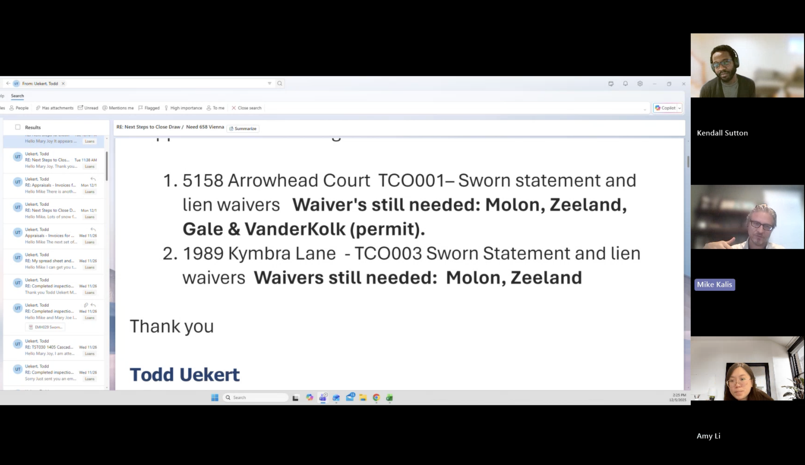
2 · Invoice presentation
Builders spend a lot of time manually editing and organizing line items to make them clearer for clients. The same customizations get repeated across jobs, which is time-consuming and error-prone.
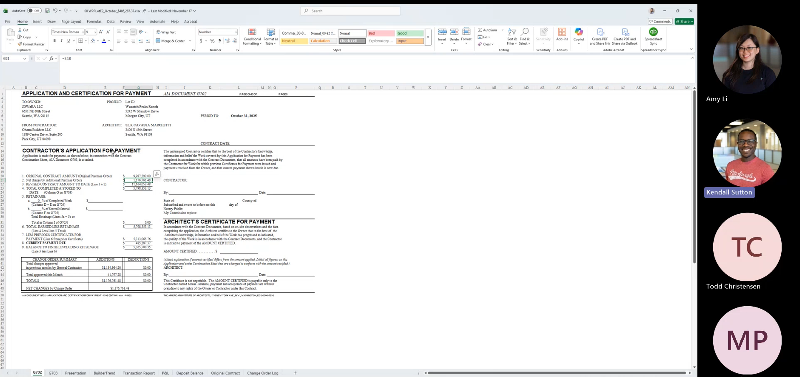
3 · Friction in client-facing invoices
Clients often don't understand what they're being billed for. They can't connect the invoice back to the estimate, scope, or job progress, so builders have to explain every one.
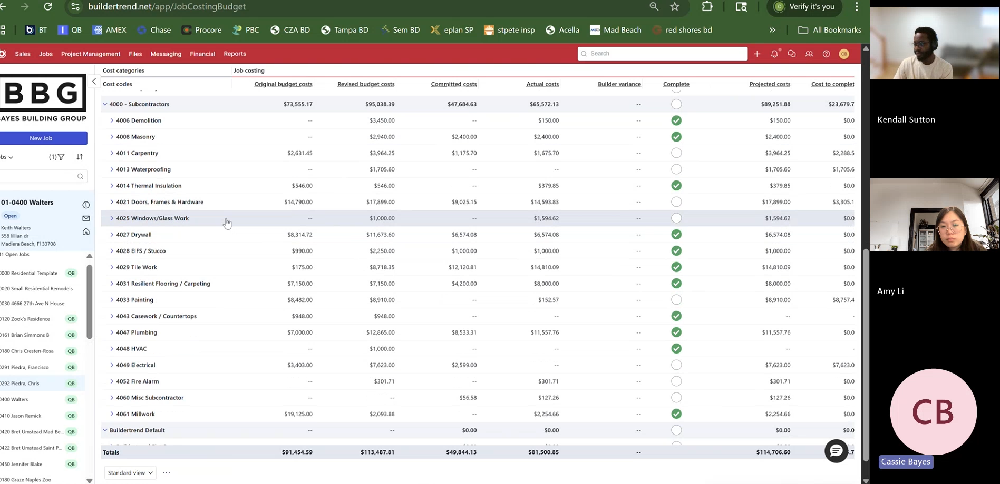
4 · Manual workarounds
Builders build draw schedules and track billing, % complete, and change orders in spreadsheets because Buildertrend doesn't support those workflows.
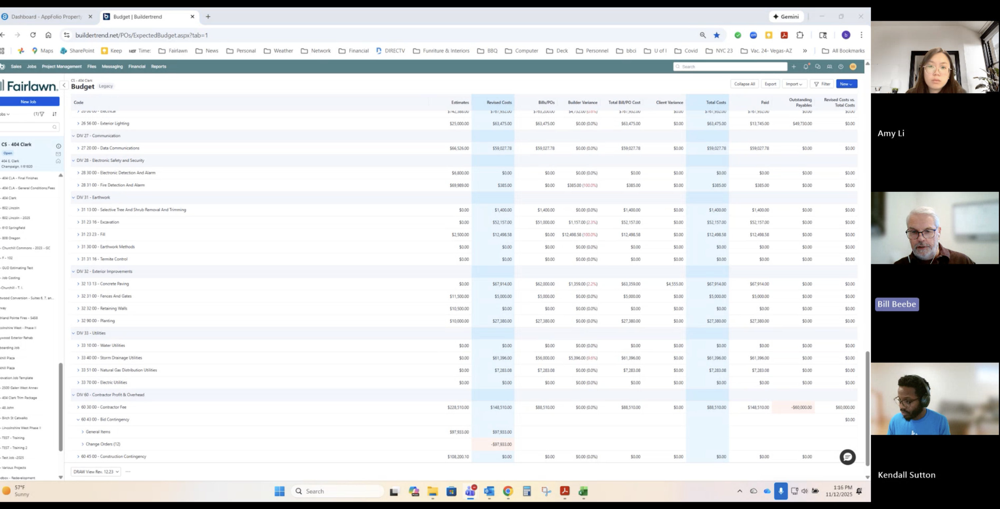
5 · Invoice date and payment terms
Without a real invoice date or payment terms, users can't sync cleanly to accounting platforms like QBO or control revenue recognition. Builders need flexibility to align Buildertrend with real-world accounting workflows.
The opportunity
Builders rely on invoicing to manage cash flow and keep jobs moving, but the current experience creates friction. It's hard to track what's due when, align billing with project progress, and communicate clearly with clients. Without structured tools like draw schedules, invoice date, or progress-invoicing workflows, builders resort to spreadsheets and workarounds. That slows billing, introduces errors, and erodes trust. Frictionless invoicing is the initiative that takes each of those gaps in turn.
Goal
Deliver a best-in-class invoicing solution that makes invoicing easy and enjoyable for builders, ultimately making Buildertrend a stickier product.
Success metric
Increase the percentage of jobs with at least one invoice sent.

Payment schedules
Problem. Builders needed a way to plan and communicate payments across a project lifecycle, not invoice ad hoc.
Goals:
- Enable builders to define structured payment schedules tied to project phases or milestones.
- Create a clear connection between scheduled payments and invoices.
- Reduce the need for external tracking tools.
- Establish a foundation for predictable billing and set the stage for progress-based invoicing.
Mapping the user workflow

User interviews
I ran interviews across both contract types to understand what creates delay, where handoffs break down, and what a "ready to release" invoice actually looks like in practice.
What are the main factors contributing to delays in creating, saving, and updating invoices?
Fixed price
Manual update bottlenecks from template limits. Builders hit significant delays because every milestone invoice requires repetitive manual updates. Templates help, but still need constant edits to numbers and titles, which adds error risk and slows the whole process.
Open book
Manual cost verification and fragmented workflow. Open-book invoices take a long time because builders manually compile and verify bills and labor hours, often 2 to 3 days to gather everything. The workflow is click-heavy and fragmented across systems.

What systems support (or hinder) linking invoices to milestones, bills, or labor?
Fixed price
Limited integration with the schedule. No automation between invoices and schedule milestones means manual entry, higher error risk, and wasted time.
Open book
Significant time managing and tracking costs. Without automation, builders cross-check bills by hand and risk missed billings.

What prep work happens before an invoice, and how do builders separate billable vs. non-billable costs?
Fixed price
Heavy time tracking job progress. Milestone invoices require constant template edits that introduce error risk.
Open book
Significant effort categorizing costs. Builders manually verify which costs fall in the billing period and decide what's billable, which takes time and opens up disputes.

When is an invoice "ready to release," and what affects the timing?
Fixed price
Communication gaps delay release. Invoices are ready after a milestone or change order is approved, but gaps between field and office teams delay release when updates aren't timely or clear. Builders want better communication workflows.
Open book
Reconciling documents slows release. Invoices are ready once billable costs are verified, but gaps or missing documents delay release. Builders want better visibility into upcoming costs to forecast cash flow.

Problem summary for fixed-price jobs
Fixed-price, milestone-based invoicing is a core workflow, but today it's manual, error-prone, and poorly connected across the job lifecycle. Even for predictable projects, builders recreate invoices by hand. Templates offer limited flexibility and need frequent edits, which increases effort and the risk of incorrect billing. Invoices are disconnected from contracts and schedules, making it hard to track progress and trigger the next invoice. Clients lack visibility into upcoming payments, which reduces transparency and trust. Communication gaps between field and office teams further delay release, extend cash cycles, and add operational strain.
Solutioning: Crazy 8s
The initiative spanned two teams — ours on fixed-price jobs, Flannel on open-book — and I wasn't the formal initiative lead. But the two halves of the problem only made sense together, so I organized a joint Crazy 8s workshop to bring both teams into one room and sketch against the same prompts. Crazy 8s is a rapid method: fold a sheet into eight sections, draw eight distinct ideas in eight minutes. The focus isn't on perfection, it's on exploring a range of approaches to the core pain points.
I pulled in a cross-functional group across both teams — developers, customer success, stakeholders, PMs, and designers. That diversity grounded the session in both user empathy and technical feasibility, and it aligned us on a shared vision before either team started designing in detail. The exercise surfaced quick, low-stakes ideas from every angle, sparked discussion about what was possible, valuable, and realistic, and helped us land on promising directions before we moved into higher fidelity.
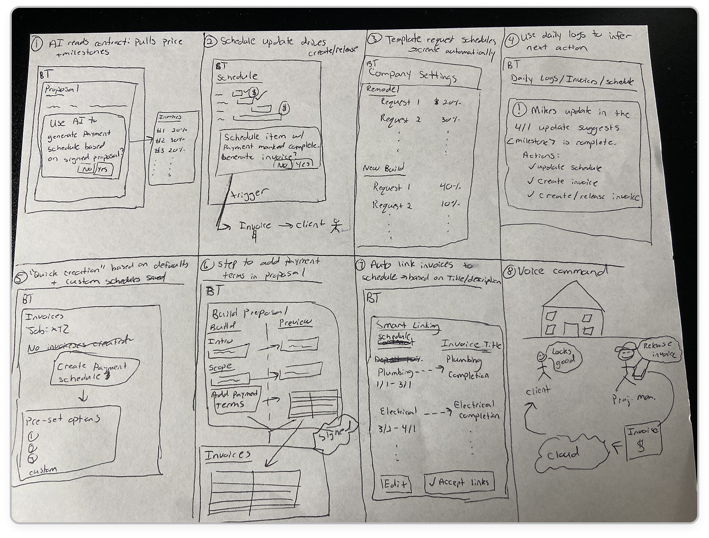

Opportunity
We split the opportunity across two teams. Our team took fixed-price jobs. Draw schedules are fairly standard for most fixed-price milestone-based jobs, so there's a real opportunity to reduce the friction, clicks, and steps needed to create those invoices.
"These invoices are actually pre-stored into our template that we use to create our jobs. We store them in there because we use them on every job, practically every job that has predetermined draw points."
Steve B., Windsor Homes
Who this part is for
Part 1 centers on the three invoicing personas we met earlier. Bella the builder owns cash flow and wants to plan billing up front. Oscar the bookkeeper creates every invoice and absorbs the consequences of template edits and manual reconciliation. Chelsea the client needs to see what's coming and why — and never feel caught off-guard about what she owes and when.
How might we...
- Automatically generate invoices based on job type and milestone progression?
- Give clients better visibility into upcoming payments and job status?
- Reduce manual errors and save time with better template logic and editing safeguards?
- Improve coordination between field and office teams through status tracking and milestone-linked workflows?
- Speed up time to cash by making sure invoices are triggered and sent promptly?
V1: The draw schedule MVP
I worked closely with engineering to find the thinnest possible slice that would let us start delivering value. The first cut gives builders a draw schedule where they enter the number of draws for a job and name each one. Linking draws to schedule items is a stretch goal for later phases.
- Payment structure. User picks how invoices are generated.
- Number of draws. User enters how many draws this job needs.
- Draw rows. Each draw shows the invoice percentage and invoice title.
- Net terms. Sets the due date and reminders for each invoice.

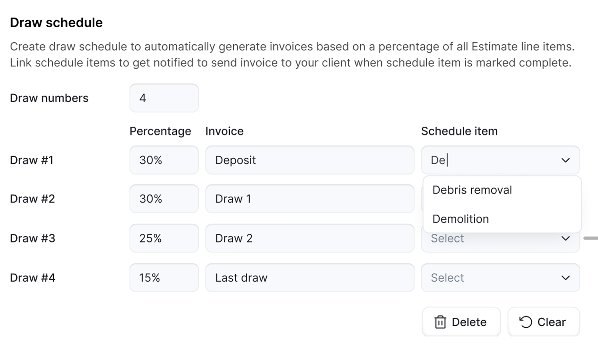
Feedback from V1 testing
Users appreciated that the design auto-generates invoices, but wanted more flexibility: the ability to select only completed work tied to estimate line items for invoicing. When asked where they'd expect to find the feature, most pointed to the job details page because that's where they typically set up jobs. Others mentioned the financials dropdown or the invoice grid page.

Learnings:
- Payment structure. Most builders follow consistent structures, with some variation on larger or longer jobs. Several asked for saved, customizable draw settings across recurring job types.
- Schedule phases & draws. Phases and milestones generally align with draw schedules, except when bank-financed inspection draws are involved.
- Invoicing from estimate. Builders prefer invoicing from completed line items rather than the entire estimate because it reflects actual progress.
- Late fees. Used as a deterrent more than enforced. Builders prefer reminders over fees to protect the relationship.
- Net terms. Typically consistent across jobs (Net 7, Net 15, Net 30).
V2: Linking draws to schedule items
V2 explored linking draws to schedule phases or individual schedule items, considering the different entry points in the workflow.

I ran another round of interviews with CAB users. The key question: if you could create draws and link them to your schedule, would you prefer linking to schedule phases or schedule items, and why?
Learnings. We moved forward with linking draws directly to schedule items. It introduces less friction and matches existing workflows: all users use schedule items, but few use schedule phases. Builders also don't need to reference their schedule to know which item to link. They have naming conventions and typically know which item pairs with which draw.
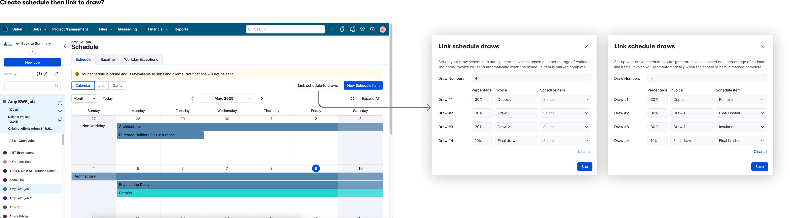

Initial results
Create Draw schedule conversion: 47 / 143 = 33% (as of July 9).

Early adoption was decent, with a few clear barriers:
- Discoverability: the setting lived in the job info page.
- Relevance: draw schedules mostly apply to new fixed-price jobs.
- Scope limits: jobs that need line-item detail (bank-funded, California builders) couldn't use the MVP yet.

Next step: improve discoverability by adding draw schedules to the invoice page on fixed-price jobs.
Impact
Early draw schedule adoption of 762 builders validated milestone-based billing as a core need, even without explicit demand. Those insights directly informed the move toward progress invoices, connecting schedules, invoices, and client expectations into a single, trusted workflow.
- Nearly 1,000 builders marked a job as funded by a construction loan, reinforcing the need for structured, milestone-based billing.
- Progress invoices surfaced as one of the most requested features, with draw schedules acting as the natural precursor.
Standing up a dedicated CAB group for the initiative also paid off quickly: one pilot user reported a defect twice, and because we had a direct line to them, we caught and fixed it before it reached the broader release.
Where this leads next
As adoption grew, draw schedules surfaced new needs around visibility, sharing, and lifecycle support — pointing to their role as a system-level source of truth rather than a standalone feature. They also exposed a quieter gap: builders could plan billing, but the invoice itself still didn't have a real invoice date, which meant due dates, payment terms, and accounting sync drifted out of alignment. That's where Part 2 picks up.
Invoice date & schedule release

Problem. Invoice date represents when the work on that invoice was completed and, combined with payment terms, calculates the due date. Buildertrend has a couple of fields (Release date, Created date) that builders tried to use as the invoice date, but they aren't editable and don't sync to accounting. That breaks record-keeping and makes it hard to set a correct Due date in BT.
Goal. Allow users to choose a future date for an invoice to be sent automatically. Useful for builders who finalize invoices ahead of time and want to schedule them for delivery on a specific date.
Payment terms
Invoice date on its own doesn't calculate a Due date — it needs a Payment term beside it. Builders told us consistently that they needed more than the defaults we'd planned (Net 7 / Net 15 / Net 30), so Payment terms shipped alongside Invoice date as a configurable field with a few refinements from early feedback.
- Net 10 added to the defaults. A surprising amount of release feedback asked for Net 10 specifically. We added it as a standard option in the follow-up release.
- Custom payment terms. Builders who ran on Net 12 or Net 45 cycles could now define their own terms instead of bending a default to fit.
- Always-editable invoice date. Until an invoice syncs to accounting, the invoice date stays editable so builders can correct timing without recreating the invoice.
Before
The legacy invoice had no true invoice date. Builders set a "Due" as a number of days before or after a linked schedule item, or picked a date manually — neither synced to accounting.

After
Invoice date, Payment terms, and Due date sit side by side. The Due date is calculated from the two on the left, which makes the accounting model visible in the UI.

Schedule release of invoice

Multiple teams were updating pieces of the invoicing workflow. To limit change fatigue, we decided on a single release to launch the new Invoice date experience. Things changing together:
- Adding a new invoice date field.
- Invoice date + Payment terms = Due date.
- Invoice date syncing to accounting.
- Linking to a schedule item directly sets the invoice date (rather than the Due date).
- New option to schedule when an invoice is sent/released to the client.
A limited release lets us run a single GTM motion instead of piecemeal rollouts, which would force retraining moments in quick succession. It also lets us collect feedback on the happy path and on each individual piece as we build.
Considerations
How the dates relate
- Sending or releasing an invoice does two things at once: it makes the invoice visible to the client and formally requests payment (that's the Release date).
- Release date plus Payment term sets the Due date.
- Linking an invoice to a schedule item ties the due date to the schedule item instead.
Shipping cadence
We wanted to break the work into the smallest possible releases, but Invoice date touches both Payment terms and schedule-item links, so stacking too many changes in a short window would have confused builders in the middle of live jobs. Once the Invoice date is in, it also probably doesn't make sense to keep two ways of calculating Due date.
Where this leads next
Part 2 gave builders an invoice object that made sense — accurate dates, sync, and scheduled release. But the invoice presentation still lagged behind how builders actually billed: by percent complete against a continuation sheet. Part 3 takes that on.
Progress invoices
Problem. Even after draw schedules, builders still couldn't bill against partial completion of line items on the estimate. Open-book and many fixed-price jobs invoice based on percent complete per scope item — the industry-standard continuation sheet or AIA-style invoice. Builders spend significant time manually preparing AIA-style payment applications in Excel, entering repetitive data, reformatting line items, and reconciling calculations. That work lives outside Buildertrend, so the invoice loses its link back to the job, the estimate, and accounting.

Goal. Build a continuation sheet inside Buildertrend so builders can invoice by percent complete per line item, export it for clients and lenders, and sync it to accounting — without leaving the product.
Q4 discovery: what we needed to answer
Which invoicing process should we support first? Fixed-price interval-based invoicing. Most banks allow no more than monthly billing, and most jobs are fixed price. Open-book interval billing and milestone invoicing come next.
Are AIA-branded invoices required? No. Banks want data structured like an AIA-style invoice, but they don't require the AIA brand.
What level of price detail is needed? Varies by bank and job. We started with estimate-group-level detail and planned to add finer detail as feedback came in.
Why progress invoicing
Progress invoicing surfaced throughout draw schedule research as one of the most requested features. Draw schedules helped fixed-price jobs plan their billing, but they couldn't reflect how much of each scope item was actually done. Builders wanted a continuation sheet: one row per line item, a percent-complete column per period, and a running total of what had been billed.
Three shapes of the same feature
The path to a continuation sheet wasn't a straight line. We first scoped adding new columns to the standard invoice — a fast way to get work in front of builders. Early user research then pointed toward a dedicated AIA-style invoice, so we set aside the first scope and redesigned around a new object. When architecture flagged the cost of standing up a second invoice type, we pivoted once more and reused the existing invoice infrastructure so sync, accounting, and reporting stayed consistent. I reworked designs and user stories within a week to keep engineering from being blocked, and we thin-sliced the MVP to protect the release. Two pivots, one ship window, and a stronger foundation because of it.
Early signal from CAB builders
"Thank you for working on this feature!! Once it's built out, this will be a game changer!"
Billy Anderson, Waters Building and Design
"LOVE the idea of finally adding progress invoicing!!! Something I've been asking for for years!"
Chris Caplan, Deep Roots Construction
Pilot recruitment
We recruited a pilot group directly from the Customer Advisory Board. 5 of 6 CAB builders agreed to join the pilot and download the partially populated continuation sheet. To widen the reach, we mined BT data for 373 accounts that flagged a job as construction-loan funded but weren't using BT invoicing — our closest proxy for builders who needed this workflow and were doing it elsewhere.
MVP: the continuation sheet
The first release gave builders the core continuation-sheet workflow:
- Create and save a progress invoice from the estimate.
- Edit percent complete per line item per period.
- Export to PDF or Excel for clients, lenders, and architects.
Design decision: period-to-period flow. On the first invoice, dollar amounts land in the This period column based on the percent complete entered. When the builder creates the next invoice, amounts from This period carry forward into Previous invoice, preserving the running story of what's been billed. Architecturally, we reused the existing invoice infrastructure rather than forking a new object, which kept sync, accounting, and reporting consistent.
"As I'm getting ready to start billing on a new project, I took a look at this. It's certainly headed in the right direction!"
Barb Dobbins, Kasten Builders — pilot feedback
Iterations from pilot feedback
Pilot builders validated the direction but asked for the pieces that would make it usable on a real job. Each of the six iterations below closed one of those gaps, and they cluster loosely into three themes:
- Keeping the books honest — sync to accounting.
- Handling the real contract — change orders, overage → change order, estimate groups.
- Giving builders flexible data entry — adding costs on open-book jobs, invoicing by $ amount.
Sync to accounting
Progress invoices push to QuickBooks and can be marked paid offline, keeping builder books accurate. Client preview and print views shipped alongside so builders could see what clients would receive before sending.
Change orders
Displaying change orders inside the continuation sheet surfaced as the single biggest adoption blocker. Many builders had already bent the standard format to show them because the original contract price drifts as the job progresses, and a progress invoice that ignores change orders can't prevent over- or under-billing.
"I like the idea of progress billing and really want to implement it in our system, however the system hasn't updated my Change Order into this."
Cassie Bayes, Bayes Building Group
"The ability to bill each change order with its own markup percentage… change orders need to be billed based on the current actual costs for that change order."
Billy Anderson, Waters Building and Design
Design decision: grouped rows, not a column. We ran a Maze survey with 9 CAB builders to test two layouts — change orders as grouped rows vs. as a separate column.
- 6 of 9 preferred change orders shown as grouped rows.
- 2 of 9 preferred the column layout.
- When forced to trade off, 5 of 9 prioritized persisting estimate groups over their preferred layout.
Verdict: grouped rows didn't create adoption risk, but removing estimate-group grouping would. We shipped grouped rows that preserve estimate groupings.
Overage → change order
When a builder invoices for more than 100% of a cost code, that's a signal the scope has grown past the original contract. We auto-allocate the overage to approved change orders sharing the same cost code, highlight the column where it happens, and suggest creating a change order inline when one doesn't exist yet. The invoice stays honest without asking builders to catch the mismatch themselves.
Estimate groups
Builders don't price jobs in cost codes alone — many price in estimate groups (e.g., Framing, Finishes) and expect that grouping to persist through proposals, contracts, and invoices. Dropping it on the progress invoice felt inconsistent with everything else the client had seen.
"There needs to be a method of making the schedule of values based on groups, not just cost codes. We give group pricing to our clients — we should be able to internally charge for framing when framing is complete but not need to show the line-by-line breakdown."
Andrew Couchey, Riggs Custom Builders
"Would like to see Group Names / Items / Cost Codes rather than just # and Description. Otherwise I have no idea what the numbers are actually for."
Jennifer Atkerson, Mitchell Construction Management
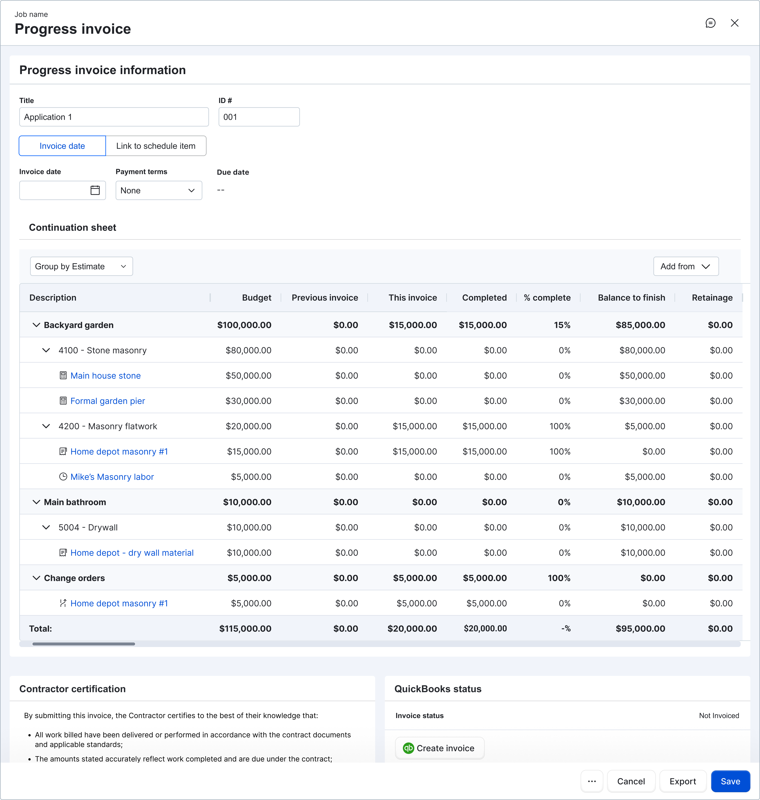
Adding costs (open-book)
Open-book builders bill against actual costs incurred, not a fixed schedule. We let them attach bills and labor directly to a progress invoice, then remove or adjust added items as the picture of the period firms up.
Invoice by $ amount
Percent-complete math works if the line item is clean, but some builders know the dollar amount they want to bill before they know the percentage. We opened the This invoice column to direct dollar entry and back-calculated the percentage behind the scenes. When the result pushes the line over 100%, we highlight the cell and surface a banner suggesting a change order.
Q1 adoption
Progress invoices shipped to GA in mid-December, with follow-on releases through Q1.
- On track for the Q1 goal of 500 first-time invoice-user accounts.
- Behind on the Q1 goal of 250 progress-invoice accounts, but adoption climbed week-over-week and sentiment improved with each release.
- The roadmap already accounts for the largest remaining blockers.
Discovery: must-haves vs. nice-to-haves
To prioritize the remaining work, we ran a card-sorting exercise with builders who had used progress invoices, asking them to separate features they needed to adopt from features that would simply be nice to have.
Must have
- Client preview
- Use for in-flight jobs (not just new ones)
- Enter $ amount into "this invoice"
- Notify clients when a progress invoice is sent
- BT Payments
- Retainage
Nice to have
- Cover page on the export
- Auto-generate change orders with overage amounts
- Lien waivers
One early assumption broke: we expected builders to adopt on new jobs only, but most manage a few long-duration jobs a year and were open to switching mid-job if the workflow was strong enough.
The biggest remaining blockers
A separate 14-builder study dug into the specific workflows that still lived outside Buildertrend. Three themes landed hardest.
Retainage — 8 of 14 builders
Retainage withholds a percentage of each invoice until the job is complete. Rules vary: sometimes 10% on labor but 0% on materials. It also applies to subs and vendors.
"Retainage is hard to deal with in Buildertrend right now… you have to keep a separate spreadsheet just for retainage."
Billy Anderson
Draw packages — 7 of 14 builders
Builders don't just send an invoice. They send a full draw package: the invoice plus every supporting document, ordered by cost code or line item. Especially common for builders using or considering Procore and Adaptive.
"The owner's reps are lazy, and even though you think they would want all this information, they just want a PDF that can be a G702, G703, or a budget — and then they want all the backup in order of cost code."
Todd Christensen
Lien waivers — 5 of 14 builders
Lien waiver requirements vary by builder process, client or lender demands, and jurisdiction. Often tied to the same monthly draw cycle as the invoice itself.
Onboarding the workflow, not just the feature
Progress invoices build on one another and pull from the estimate differently than standard invoices. Early adopters could figure out what the feature did but not where it fit in their day-to-day — a gap that showed up across the product, not just here.
"You bring on new features, but never really show how they should be used in relationship to everything else. Kind of like the rest of the program — lots of really cool parts but not a road map to putting the puzzle together."
Cindy Roth, Beyond Custom Contracting
What's next
- Retainage — auto-calculated at the line-item level, including different rates for labor vs. materials.
- Draw packages — bundle the invoice with supporting attachments, ordered by cost code.
- Lien waivers — handle unconditional and conditional waivers inside the invoice workflow.
- Online payments for progress invoices — close the loop so clients can pay directly from the invoice.
- Selections invoicing wizard — bring approved selections into progress invoices so the continuation sheet reflects every billable item.
Impact
Progress invoices completed the frictionless invoicing arc. Builders now plan (draw schedule), bill against real work (progress invoice), set accurate invoice dates, and schedule delivery — all inside Buildertrend, all synced to accounting, without leaving the product.
Reflections
Frictionless invoicing is the longest and most tangled piece of work I've led at Buildertrend. Shipping all three parts taught me as much about the shape of design leadership as it did about invoices. A few things I'd do differently next time:
- Balance UX quality with technical risk earlier. When architecture introduced constraints mid-build — as it did on progress invoices — I sometimes traded off UX quality to keep the team moving. Flagging those tradeoffs louder, earlier, and making the cost of "good enough" visible to stakeholders would have given us better options.
- Filter stakeholder feedback more actively. Invoicing touches a lot of teams, and a lot of voices ended up in the room. Not every piece of feedback belongs in the current release. I want to be more deliberate about what to address now versus capture for later iteration.
- Slice meaningfully, not thinly. Thin slices kept us shipping, but a few landed so narrow that builders couldn't feel the value. Next time I want to pair slicing with clearer value markers so every release lands as a visible step forward.
- Align leadership early. The progress invoice pivots happened because leadership direction, user research, and architecture surfaced their inputs at different points in the cycle. Getting those voices in one room at the start would have saved us a full redesign cycle.